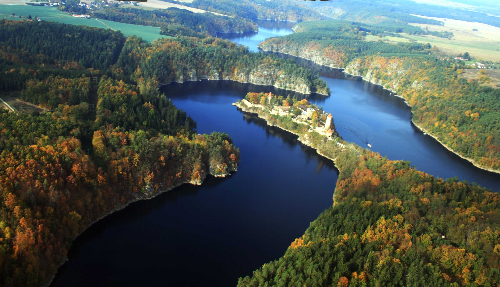

Orlická přehrada

Něco o přehradě
Součástí Vltavské kaskády je přehrada Orlík, která jejíž hráz přehradila tok řeky Vltavy u Solenice v okrese Příbram. Přehradní nádrž dostala své jméno podle zámku, který kdysi čněl nad hlubokým údolím Vltavy a dnes se nachází jen pár metrů nad hladinou přehradního jezera.
Ze všech vltavských přehrad je Orlická přehrada největší, nejvyšší a nejmohutnější. Její 511 m dlouhá hráz dosahuje v koruně výšky 91 m.
Kdy můžete naštívit
Přehrada Orlík, kam je možno nahlédnout v rámci exkurzí, Prohlídku infocentra a unikátní vodní elektrárny Orlík. Exkurze je soustředěna do interiéru a exteriéru elektrárny a hráze. Uvidíte celý provoz včetně Kaplanových turbín, zázemí elektrárny i přivaděčů vody. Součástí běžné prohlídky je i okruh hrází. Tedy strávíte nejméně 60 minut v technicky unikátním prostoru!